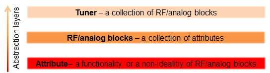
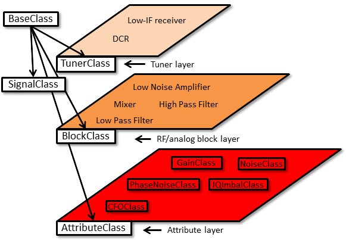

Getting started
Contents
Product Overview
The amoRF toolbox is a versatil environment for behavioral modeling and system level simulation of RF front-ends. The toolbox was created to generate test vectors for digital compensation algorithms of RF front-end nonidealities. In this application a low level simulation is not necessary, but a quick evaluation of RF front-end effect on the received signal is desired.
Abstaction Layers
The abstraction layers are the result of RF receiver architecture generalization. This multilayer approach deployed in the development of the amoRF toolbox makes it highly flexible and easy to use. Three abstraction layers were established. The first layer ois the "attribute" layer. Attributes are considered desired functionalities and undesired non-idealities present in to RF/analog blocks. Attributes are modeled using analytical expressions. The components of this layer encapsulates the properties and the effects of attributes in well distingushed entities. The second layer is populated by the RF/analog blocks (amplifers, mixers, etc.). The elements of this layer are seen as a group of attributes bounded between input and output impedances. Thus reliable behavioral models are obtaned. The components of the third layer are the RF tuners. The elements of this layer are seen as a cascade of RF/analog blocks. Abstraction layers currently supported by the amoRF toolbox is illustrated below.

Object Oriented Implementation
Two types of classes are used for OOP implementation: (i) layer classes to implement the abstraction layers; (ii) attributes classes encapsulating the properties and effects of the functionalities and non-idealities. Both classes are derived from BaseClass. This parent class contains general purpose methods (read and write of properties).

Layer Classes.
The parent class of the toolbox components is BaseClass. A class is defined for each abstraction layer: AttributeClass is the class especially intended to be a template of the attributes. BlockClass and TunerClass provide mechanism to aggregate attribute objects, respectivelly the obtained RF/analog behavioral models. The "messaging" between the layers is done using signals, that are objects derived form SignalClass.
Attribute Classes.
Non-idealities may be defined by the user too, but some predefined RF block nonidealities can be found in the toolbox:
Find out more about the usage of the amoRF toolbox visit the amoRF User Guide.